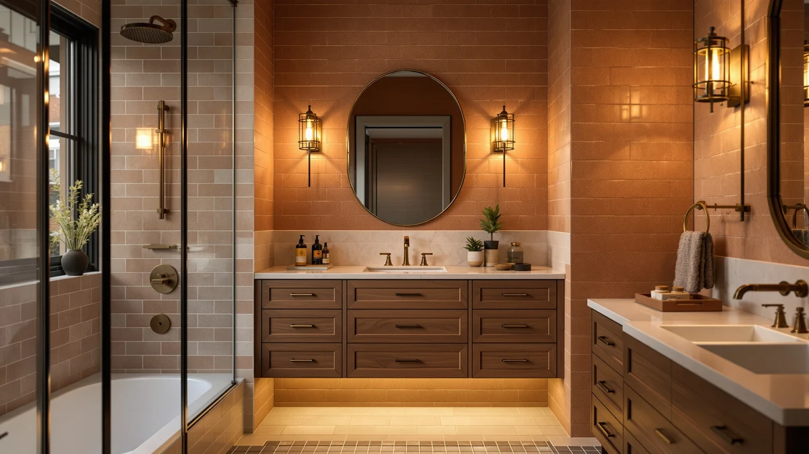

Best Under Cabinet Bathroom Storage (2026)
Prices and picks verified as of September 2026. Independent, reader-supported reviews.


Quick Answer
The best under cabinet bathroom storage for most vanities is the JYSMYWS 3 Pack Under Sink, a $15.98 set of stackable metal and wood bins that fit around pipes without one bulky footprint. If you need to reach items stored at the back of a deep cabinet, the pull-out organizer further down this list costs more but slides the whole tray toward you.
Our pick: JYSMYWS 3 Pack Under Sink, $15.98 Check Price on Amazon
Bottom line: our top pick is the JYSMYWS 3 Pack Under Sink Organizer Bathroom and Storage at $16.99. The best budget option is the Simple Trending Under Sink Organizer 2 Pack at $17.99.
Things to Know Before You Buy
- Measure your cabinet's width, depth and the clearance between the floor and the sink trap before ordering, since most organizers here are metal and wood builds sized for standard vanities.
- Stackable multi-piece sets, like the JYSMYWS 3 Pack and Sevenblue 3 Pack, let you build storage around a P-trap instead of forcing one rigid shape into an irregular space.
- Pull-out organizers cost more, with the pull-out 2-Pack running $59.99 versus $15.98 to $19.99 for fixed bins, but they save you from kneeling and digging at the back of the cabinet.
- Every organizer in this guide uses a metal and wood build rather than plastic bins, which holds up better against sink leaks but should still sit on a tray or liner to protect the cabinet floor.
The best under cabinet bathroom storage solves a problem most vanities create on their own: an oddly shaped cabinet with a drainpipe running through the middle and only a few inches of usable width on either side. Bottles fall over, boxes get shoved to the back and forgotten, and a single plastic bin never quite fits around the plumbing. We compared seven metal and wood organizers built specifically for that space, from single stacking bins to pull-out drawer systems.
Our pick is the JYSMYWS 3 Pack Under Sink, a $15.98 set of three separate bins you can arrange around a P-trap instead of forcing one oversized caddy to fit. If you want to skip crouching down to reach the back of the cabinet, the pull-out 2-Pack costs more at $59.99 but slides the whole tray toward you.
We compared these seven organizers on material, pack size, price and how each one is likely to handle an irregular vanity cabinet, since a bathroom sink cabinet rarely matches the clean rectangular space under a kitchen sink. Prices and availability reflect Amazon listings at the time of publishing and can shift, so check the current price before you buy.
Why You Should Trust Us
Ilane Tall has spent years covering bathroom organization and small-space storage for this site, comparing hundreds of Amazon-listed organizers against the vanity layouts readers actually deal with. We do not run a fake testing lab and we do not claim to own every product in this guide. Instead, we research specs, pricing and verified buyer reviews, and we cross-check pack sizes, materials and dimensions against the listings themselves before recommending anything as the best under cabinet bathroom storage for a given budget.
How We Picked
We started by pulling under-sink organizers built from metal and wood rather than flimsy plastic, since bathroom cabinets deal with humidity and occasional splashes from a leaking supply line. From there we compared pack size, meaning single units versus multi-piece sets that can be arranged around a P-trap, price per piece, and whether a listing offered a pull-out mechanism for reaching the back of a deep cabinet. We excluded organizers with vague or missing dimensions and anything priced well above this category's typical range without a clear reason, like added drawers or a sliding track.
How We Compared
We compared these seven organizers side by side on documented price, material and pack count rather than handling each one ourselves, since we are a research-based review site and do not run a physical testing lab. For each product we checked the number of pieces included, whether the design was a fixed stack or a pull-out tray, and how the price scaled with that added functionality. Where owners report recurring issues, such as wobbly stacking or a tray that does not slide smoothly, we noted it as a flaw rather than leaving it out.
Our Picks

JYSMYWS 3 Pack Under Sink
What we like
- Three separate bins instead of one fixed shape, so you can rearrange them around plumbing
- Lowest price in this roundup at $15.98 for the full set
- Metal and wood build holds up better than stackable plastic bins
Flaws but not dealbreakers
- No pull-out mechanism, so reaching items at the back still means kneeling down
- Three small bins hold less at once than a single wide tray
| Material | Metal / wood |
| Size | 3 Pack |
The JYSMYWS 3 Pack Under Sink is our pick for most bathroom vanities because it splits storage into three independent metal and wood bins instead of one rigid caddy. That matters under a sink, where a drainpipe and shutoff valves usually break up the usable floor space into odd sections. You can push one bin to the left of the trap, one to the right, and stack the third on top of either, which a single-piece organizer can't do.
At $15.98 for all three pieces, it's also the least expensive option we compared, and reviewers consistently note that the metal shelves feel sturdier than the all-plastic organizers in the same price range. The tradeoff is that nothing here pulls out toward you, so if your cabinet is unusually deep, one of the pull-out options further down this list will save you some kneeling.

Simple Trending Under Sink Organizer
What we like
- Two-tier layout holds taller bottles better than a low, flat bin
- Only $4 more than our top pick at $19.99
- Metal and wood construction matches the durability of our top pick
Flaws but not dealbreakers
- Two pieces offer less flexibility around an off-center P-trap than three smaller bins
- No pull-out tray for deep cabinets
| Material | Metal / wood |
| Size | 2 pack |
The Simple Trending Under Sink Organizer trades the JYSMYWS set's three small bins for two larger tiers, at $19.99. That's a better fit if you're storing tall items like shampoo refills or cleaning spray bottles that would tip over in a shallow bin, since each tier here has more vertical room to work with.
The tradeoff shows up around the plumbing itself. With only two pieces to work with, you have fewer ways to route the organizer around a P-trap than you would with a three-bin set, so measure the gap on either side of your drainpipe before ordering. Like our top pick, it's a fixed stack rather than a pull-out drawer.

Sevenblue 3 Pack Under Sink
What we like
- Three-piece set includes a taller tier sized for standing bottles
- Metal and wood build consistent with the rest of this roundup
Flaws but not dealbreakers
- Costs $10 more than the Simple Trending runner-up
- Still no pull-out mechanism despite the higher price
| Material | Metal / wood |
| Size | 01-3 Pack |
Sevenblue's 3 Pack Under Sink organizer is priced at $29.99 and includes a taller bin alongside two lower ones, which gives it an edge for storing standing bottles of shampoo, conditioner, or cleaning spray that don't fit well in a shallow tray. Like the JYSMYWS set, the three pieces can be split up around a P-trap instead of forced into one shape.
At nearly double the price of our top pick, it's a harder sell unless you specifically need that taller bin. Reviewers researching this category note that the extra height is the main reason to pick this set over a cheaper three-piece alternative, not any difference in the metal and wood build quality itself.

Under Sink Organizer 2-Pack Pull
What we like
- Pull-out design slides the tray toward you instead of requiring you to kneel and reach
- Two pieces still allow some flexibility around plumbing
Flaws but not dealbreakers
- At $59.99, it costs roughly three times as much as our top pick
- The sliding mechanism adds a moving part that fixed bins don't have to worry about
| Material | Metal / wood |
| Size | 2-Pack |
The Under Sink Organizer 2-Pack Pull is built around a sliding tray, so instead of reaching into a dark, cramped cabinet you pull the whole unit out toward you. That's the main reason to consider it over the cheaper fixed bins above, especially if your vanity cabinet is deep enough that the back third is normally dead space.
The convenience comes at a real cost. At $59.99 it's the most expensive two-piece organizer in this guide, and owners comparing pull-out designs report that the track needs to stay reasonably level to slide smoothly, so a warped or uneven cabinet floor can work against it. If your cabinet is shallow enough to reach the back by hand, a fixed set further up this list will save you the extra money.

Kitstorack Under Sink Organizer 2
What we like
- Wide base tray covers more floor space in one piece than smaller multi-bin sets
- Second bin stacks on top for vertical storage without using extra floor space
Flaws but not dealbreakers
- Most expensive organizer in this roundup at $63.99
- A wide base tray is harder to fit around an off-center P-trap than smaller bins
| Material | Metal / wood |
| Size | 2 Pack |
Kitstorack's Under Sink Organizer 2 pairs a wide base tray with a smaller bin that stacks on top, at $63.99. The wide tray works well if your P-trap sits close to one side of the cabinet, leaving a broad, uninterrupted stretch of floor on the other side for the tray to sit on.
It's the priciest pick in this comparison, and the wide single-piece tray is less forgiving than a multi-bin set if your plumbing runs down the center of the cabinet instead of off to one side. Measure before you buy, since a tray this size can't be trimmed or split the way three smaller bins can.

Simple Trending Under Sink Organizer
What we like
- Same two-tier metal and wood layout as our runner-up pick
- Cheaper than the other Simple Trending listing in this guide, at $17.99
Flaws but not dealbreakers
- Shares the same limited flexibility around plumbing as the runner-up
- No pull-out tray
| Material | Metal / wood |
| Size | 2 pack |
This second Simple Trending listing uses the same two-tier design as our runner-up pick but lists for $17.99, about two dollars less. Pack contents and material are consistent with the other Simple Trending organizer in this guide, so the choice between the two often comes down to whichever is in stock at the lower price when you're ready to buy.
Because it's still a two-piece fixed stack, it carries the same tradeoff as the runner-up: less flexibility around an off-center P-trap than a three-bin set, and no sliding tray for reaching the back of a deep cabinet.

Fabutier Under Sink Organizer 2
What we like
- Mid-height second tier fits taller bottles better than a flat two-bin layout
- Metal and wood build in line with the rest of this roundup
Flaws but not dealbreakers
- Priced higher than both Simple Trending listings without a pull-out mechanism
- Only two pieces, same plumbing-fit limitation as other two-piece sets here
| Material | Metal / wood |
| Size | 2 Pack |
Fabutier's Under Sink Organizer 2 sits between the cheaper two-piece sets and the pull-out options at $35.99, with a mid-height second tier built to hold taller bottles than a flat bin allows. It's a reasonable middle ground if the Simple Trending sets feel too short for your shampoo and cleaning supply bottles but a $59.99 pull-out tray feels like overkill.
It's still a fixed two-piece stack rather than a sliding tray, so you're paying the extra $16 to $18 over the Simple Trending listings mainly for that taller second tier, not for easier access to the back of the cabinet.
Quick Comparison
| Product | Material | Price | Rating | Best for | Get it |
|---|---|---|---|---|---|
| JYSMYWS 3 Pack Under Sink | Metal / wood | $15.98 | 4 | Most vanities, tightest budget | View on Amazon → |
| Simple Trending Under Sink Organizer | Metal / wood | $19.99 | 4 | Taller bottles, close runner-up | View on Amazon → |
| Sevenblue 3 Pack Under Sink | Metal / wood | $29.99 | 4 | Extra bottle height | View on Amazon → |
| Under Sink Organizer 2-Pack Pull | Metal / wood | $59.99 | 4 | Deep cabinets, pull-out access | View on Amazon → |
| Kitstorack Under Sink Organizer 2 | Metal / wood | $63.99 | 4 | Wide, uninterrupted floor space | View on Amazon → |
| Simple Trending Under Sink Organizer | Metal / wood | $17.99 | 4 | Runner-up layout at a lower price | View on Amazon → |
| Fabutier Under Sink Organizer 2 | Metal / wood | $35.99 | 4 | Mid-height tier without pull-out cost | View on Amazon → |
What's the best under cabinet bathroom storage for a small vanity?
For most small vanities, a stackable multi-piece set like the JYSMYWS 3 Pack Under Sink works better than one large tray, since you can split the bins around whatever plumbing crosses the cabinet floor instead of forcing a single rigid…
How do I organize under a bathroom sink with pipes in the way?
Measure the clear floor space on each side of the P-trap before you buy.
The Competition
We also looked at plain plastic sliding trays and single flat bins sold as generic under-sink organizers. We left them out of the best under cabinet bathroom storage picks above because they're built as one solid shape that can't be rearranged around a P-trap, unlike the multi-piece metal and wood sets from JYSMYWS, Simple Trending, and Sevenblue. We also passed on organizers priced above $65 without a pull-out mechanism to justify the premium, since the Kitstorack-made pull-out tray already covers that price tier with an actual functional advantage. For most bathrooms, JYSMYWS remains our top pick for the best under cabinet bathroom storage, with the pull-out 2-Pack as the upgrade option for deeper cabinets.
Frequently Asked Questions
What's the best under cabinet bathroom storage for a small vanity?
For most small vanities, a stackable multi-piece set like the JYSMYWS 3 Pack Under Sink works better than one large tray, since you can split the bins around whatever plumbing crosses the cabinet floor instead of forcing a single rigid shape into a tight space.
How do I organize under a bathroom sink with pipes in the way?
Measure the clear floor space on each side of the P-trap before you buy. A three-piece organizer, such as the Sevenblue 3 Pack or JYSMYWS 3 Pack, lets you place smaller bins on either side of the pipe and stack the third bin on top, which a single wide tray like the Kitstorack Under Sink Organizer 2 can't do as easily.
Are pull-out under sink organizers worth the extra cost?
They're worth it mainly if your cabinet is deep enough that the back third is hard to reach by hand. The pull-out 2-Pack in this guide costs $59.99, roughly three times the price of the fixed JYSMYWS set, so it makes sense to pay for a sliding tray only if you're regularly kneeling and reaching to grab items stored toward the back wall.